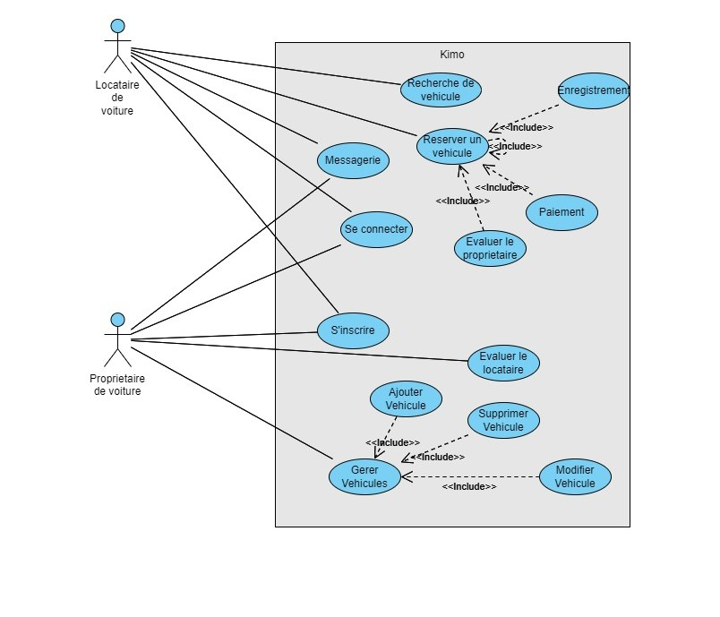

Description du projet
Le projet Kimo vise à développer une application de location de voitures entre particuliers, permettant aux propriétaires de voitures de les louer à d’autres utilisateurs. Cette application sera disponible sur les plateformes Android et iOS et sera développée en utilisant le framework Flutter. Le projet couvrira l'ensemble de l'architecture de l'application, du backend au frontend, afin de produire un prototype fonctionnel.
Au Maroc, il existe un écart significatif dans le marché de la location de voitures malgré une forte demande provenant des habitants et des touristes. Les services de location de voitures traditionnels sont souvent incapables de répondre à cette demande, entraînant des pénuries fréquentes. De plus, le concept de possession de voiture devient moins pratique et plus coûteux en raison de la congestion urbaine et des coûts élevés associés à l'entretien d'un véhicule. En conséquence, il est nécessaire de trouver une solution innovante, pratique et durable pour relever ces défis de mobilité urbaine.
Kimo est une plateforme de partage de voitures entre particuliers conçue pour répondre aux besoins de transport au Maroc en s'appuyant sur les principes de l'économie de partage (Pensez à Airbnb pour les voitures). La plateforme mettra en relation les propriétaires de véhicules avec les personnes ayant besoin d'un moyen de transport à court terme, offrant ainsi une alternative économique et durable à la possession et à la location de voitures traditionnelles. Ce faisant, Kimo vise à maximiser l'utilisation des véhicules existants, à réduire le nombre de voitures sur la route et à offrir une option de transport abordable tant pour les habitants que pour les touristes.
Exigences
Besoins fonctionnels
- Fonctionnalité de Recherche : Permettre aux utilisateurs de rechercher des véhicules en fonction du type, de la localisation, de la disponibilité, des évaluations et des avis.
- Système de Réservation : Permettre aux invités de réserver des véhicules directement sur la plateforme.
- Messagerie : Fournir un système de messagerie pour que les utilisateurs puissent communiquer avec les hôtes.
- Enregistrement et Départ : Offrir des fonctionnalités pour que les utilisateurs puissent s'enregistrer et se désenregistrer de leurs voyages.
- Système d'Évaluation : Inclure un système d'évaluation pour que les utilisateurs puissent noter leur expérience avec le véhicule et l'hôte.
- Prise de photos : Prendre des photos avant et après l'utilisation d'une voiture pour vérifier les dommages éventuels.
- Système de paiement : Utiliser un système de paiement robuste pour que les utilisateurs puissent payer leurs réservations en toute sécurité.
Besoins non-fonctionnels
- Utilisabilité : Fournir une interface utilisateur intuitive avec une navigation et des instructions claires.
- Scalabilité : Utiliser des services d'informatique en nuage pour pouvoir facilement évoluer afin de s'adapter à une base d'utilisateurs croissante et à l'augmentation du trafic.
- Compatibilité : Assurer la compatibilité de l'application avec les plateformes Android et iOS.
Infrastructure
L'infrastructure de l'application Kimo sera conçue pour la scalabilité, la flexibilité et l'efficacité. Le front-end sera développé en utilisant Flutter, assurant une expérience utilisateur fluide et cohérente sur les plateformes Android et iOS. Firebase sera utilisé pour le backend, offrant des capacités de base de données en temps réel, d'authentification utilisateur et de stockage cloud pour les photos et autres médias. De plus, une base de données PostgreSQL sera utilisée pour gérer les relations de données complexes et garantir l'intégrité des données.
Analyse des exigences
Cas d'utilisation
Inscription et creation de profil
- Acteurs : Nouvel utilisateur
- Description : Un nouvel utilisateur souhaite s'inscrire sur l'application Kimo et créer son profil.
- Préconditions : L'utilisateur a téléchargé l'application.
- Scénario :
- L'utilisateur ouvre l'application Kimo.
- L'utilisateur sélectionne l'option "S'inscrire".
- L'utilisateur entre ses informations personnelles (nom, adresse e-mail, mot de passe).
- L'utilisateur reçoit un e-mail de vérification.
- L'utilisateur vérifie son e-mail.
- L’utilisateur entre son numero de telephone.
- L’utilisateur vérifie son numéro de téléphone.
- 9. L'utilisateur complète son profil en ajoutant une photo, une adresse, son permis de conduire et des informations de paiement.
Recherche et réservation d'un véhicule
- Acteurs : Utilisateur inscrit
- Description : Un utilisateur souhaite rechercher et réserver un véhicule pour une période donnée.
- Préconditions : L'utilisateur est connecté à son compte et a complété son profil.
- Scénario :
- L'utilisateur ouvre l'application Kimo et accède à l'onglet de recherche.
- L'utilisateur entre les détails de la recherche (localisation, dates, type de véhicule).
- L'application affiche une liste de véhicules disponibles correspondant aux critères.
- L'utilisateur sélectionne un véhicule pour voir les détails (prix, photos, options, avis).
- L'utilisateur clique sur "Réserver".
- L'utilisateur confirme la réservation et procède au paiement.
- L'utilisateur reçoit une confirmation de réservation avec les détails de la location.
Ajout d'un véhicule à la plateforme
- Acteurs : Propriétaire de véhicule inscrit
- Description : Un propriétaire souhaite ajouter son véhicule à la plateforme Kimo pour le louer.
- Préconditions : Le propriétaire est connecté à son compte et a complété son profil.
- Scénario :
- Le propriétaire accède à l'onglet "Ajouter un véhicule".
- Le propriétaire entre les détails du véhicule (marque, modèle, année, immatriculation, etc.).
- Le propriétaire télécharge des photos du véhicule.
- Le propriétaire définit les prix de location et les disponibilités.
- Le propriétaire accepte les termes et conditions de location.
- Le propriétaire soumet le véhicule pour approbation.
- Le véhicule est approuvé et ajouté à la liste des véhicules disponibles sur Kimo.
Gestion de la location
- Acteurs : Utilisateur, Propriétaire de véhicule
- Description : L'utilisateur et le propriétaire gèrent les aspects logistiques de la location (remise des clés, état des lieux).
- Préconditions : Une réservation est confirmée.
- Scénario :
- L'utilisateur et le propriétaire communiquent via l'application pour convenir d'un lieu et d'une heure pour la remise des clés.
- Le jour de la location, le propriétaire et l'utilisateur se rencontrent.
- Le propriétaire effectue un état des lieux avec l'utilisateur.
- Les deux parties confirment l'état du véhicule via l'application.
- À la fin de la location, l'utilisateur et le propriétaire se rencontrent à nouveau pour la restitution du véhicule.
- Un nouvel état des lieux est effectué et confirmé via l'application.
- Le propriétaire note l'utilisateur et vice versa.
Diagramme des cas d'utilisation
Scénario
Recherche et réservation d'un véhicule
- Initialisation : L'utilisateur ouvre l'application et accède à l'écran d'accueil.
- Recherche :
- L'utilisateur entre les détails de recherche : Casablanca, du 1er au 5 juin, catégorie SUV.
- L'application affiche une liste de SUV disponibles à Casablanca pour les dates spécifiées.
- Sélection :
- L'utilisateur parcourt les options et sélectionne un SUV de marque Toyota.
- L'application affiche les détails : photos, description, prix par jour, avis des précédents locataires.
- Réservation :
- L'utilisateur clique sur "Réserver".
- L'utilisateur confirme les dates et le prix total.
- L'utilisateur procède au paiement en entrant les informations de sa carte de crédit.
- Confirmation :
- L'application affiche un message de confirmation de réservation.
- L'utilisateur reçoit un e-mail avec les détails de la réservation.
- Préparation à la location : L'utilisateur et le propriétaire communiquent via l'application pour convenir des détails de la remise des clés.
- Jour de la location :
- L'utilisateur rencontre le propriétaire à l'adresse convenue.
- Les deux effectuent un état des lieux et le confirment via l'application.
- L'utilisateur commence sa période de location.
- Retour du véhicule :
- À la fin de la période de location, l'utilisateur et le propriétaire se rencontrent pour la restitution.
- Un nouvel état des lieux est effectué et confirmé.
- L'utilisateur et le propriétaire se notent mutuellement sur l'application.
- Scénario :
- L'utilisateur et le propriétaire communiquent via l'application pour convenir d'un lieu et d'une heure pour la remise des clés.
- Le jour de la location, le propriétaire et l'utilisateur se rencontrent.
- Le propriétaire effectue un état des lieux avec l'utilisateur.
- Les deux parties confirment l'état du véhicule via l'application.
- À la fin de la location, l'utilisateur et le propriétaire se rencontrent à nouveau pour la restitution du véhicule.
- Un nouvel état des lieux est effectué et confirmé via l'application.
- Le propriétaire note l'utilisateur et vice versa.
Rapport d'avancement
Semaine 3 –
Prototypage & Conception du modèle de données
Objectifs
Réalisations
Notes
Semaine 2 –
Analyse des exigences & Études de solutions existantes
Objectifs
- Analyse des exigences
- Modelisation des exigences
- Etude de solutions existantes
Réalisations
-
Exigences
Finaliser la collecte des exigences fonctionnelles et non fonctionnelles.
-
Analyse des exigences
L'élaboration des scénarios des cas d'utilisation pour l'application Kimo inclut plusieurs étapes clés. Tout d'abord, un nouvel utilisateur souhaite s'inscrire sur l'application Kimo et créer son profil. Une fois inscrit, l'utilisateur peut rechercher et réserver un véhicule pour une période donnée. De l'autre côté, un propriétaire souhaite ajouter son véhicule à la plateforme Kimo pour le louer. Enfin, l'utilisateur et le propriétaire gèrent ensemble les aspects logistiques de la location, tels que la remise des clés et l'état des lieux du véhicule.
-
Modelisation des exigences
L'élaboration d'un diagramme de cas d'utilisation pour l'application Kimo.
Notes
Semaine 1 –
Ouverture de projet & Élaboration des exigences
Objectifs
- Prendre en main les outils qui seront utilisés pour le projet
- Produire une première version de l'échéancier
- Déterminer les exigences du projet
- Étudier le domaine, les notions et outils envisagés pour le projet
Réalisations
-
Introduction du Projet
Définition de l'objectif de Kimo comme une plateforme de covoiturage entre particuliers, offrant une alternative pratique, économique et durable pour le transport.
-
Analyse de l'Économie Collaborative
Exploration de l'économie collaborative et de ses avantages, avec des exemples comme Airbnb et Uber. Mise en évidence de la sous-utilisation des voitures et comment le covoiturage y répond.
-
Revue des Services Existants
Identification des services de covoiturage tels que Communauto, Turo et Getaround. Clarification que Kimo sera similaire à Turo, ciblant le marché marocain.
-
Opportunité de Marché au Maroc
Constat de l'absence de services de covoiturage entre particuliers au Maroc. Mise en avant de la forte demande de location de voitures chez les touristes et du potentiel économique.
-
Exigences du Projet
- Spécifications fonctionnelles : recherche, réservation, messagerie, enregistrement/départ, notation, paiement, vérification d'identité et prise de photos.
- Spécifications non fonctionnelles : facilité d'utilisation, évolutivité et compatibilité avec Android et iOS.
-
Planification
Création d'un diagramme de Gantt pour les quatre semaines à venir.